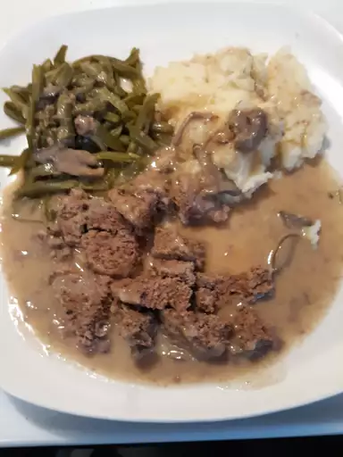

Salisbury Steak

This Salisbury steak recipe comes together
quickly and does not need a lot of time
in the slow cooker. It's a delicious way
to add flavor to ground beef and the
children love it! The gravy is delightful
served over mashed potatoes.
Ingredients
- 2 pounds lean ground beef
- ½ cup Italian seasoned bread crumbs
- ¼ cup milk
- 1 (1 ounce) envelope dry onion soup
mix
- ¼ cup all-purpose flour
- 2 tablespoons vegetable oil
- 2 (10.5 ounce) cans condensed cream
of chicken soup
- ¾ cup water
- 1 (1 ounce) packet dry au jus mix
Steps
- Combine ground beef, bread crumbs, milk,
and onion soup mix together in a large
bowl until well combined; shape into 8
patties.
- Heat oil in a large skillet over medium-high
heat. Dredge patties in flour just to coat,
and quickly brown on both sides in the hot
skillet. Place browned patties into the slow
cooker stacking alternately like a pyramid.
- Mix condensed soup, water, and au jus mix
together in a medium bowl; pour over the
beef patties. Cook on Low until ground beef
is well done, about 4 to 5 hours.